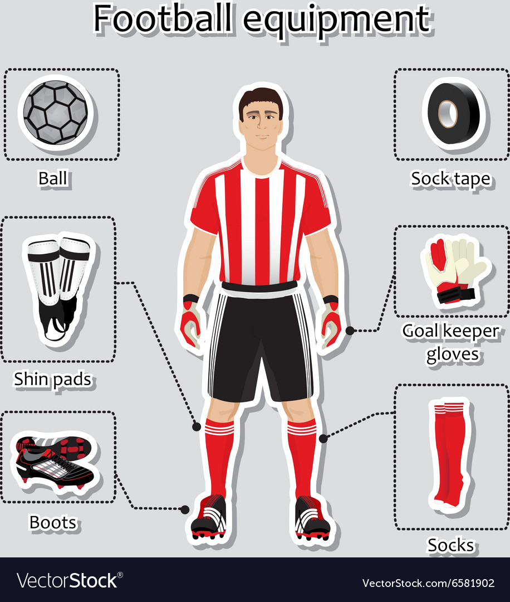
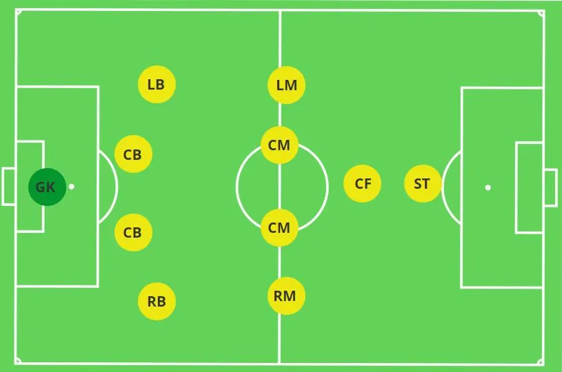
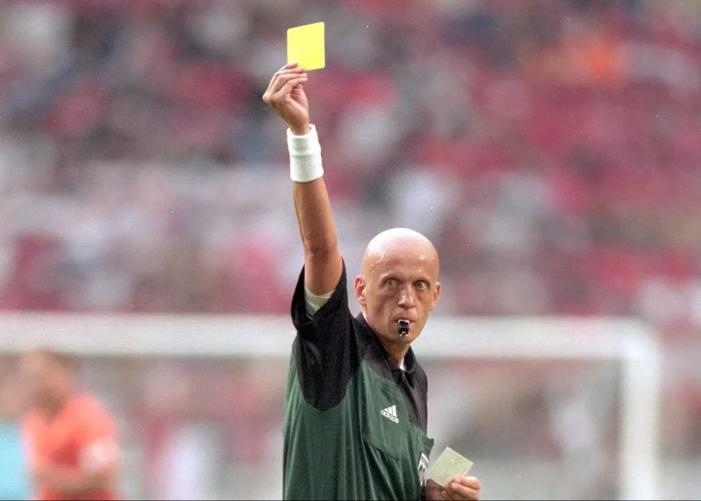

Pravila igre
Svaka momčad se sastoji od 11 igrača, uključujući vratara.
Nogometna utakmica traje 90 minuta, podijeljeno u dva poluvremena
od po 45 minuta. U nekim slučajevima može biti produžetka igre ili
izvođenje jedanaesteraca ako utakmica završi neriješeno.
Cilj igre je postići gol u protivničku mrežu. Gol se postiže kada lopta u potpunosti prijeđe gol-liniju između stativa i ispod grede, a da pri tome nije napravljeno prekršajno ponašanje. Igrači mogu koristiti samo svoje tijelo i noge za igranje, osim golmana koji može koristiti ruke unutar svog kaznenog prostora.
Igrači moraju nositi odgovarajuću opremu, uključujući dres, kratke hlače, čarape, kopačke i kostobrane. Nogomet se igra na travnatom igralištu sa dimenzijama između 90 i 120 metara u dužini i između 45 i 60 metara u širini. Teren je podijeljen linijama i ograđen, a u sredini se nalazi središnji krug.
Cilj igre je postići gol u protivničku mrežu. Gol se postiže kada lopta u potpunosti prijeđe gol-liniju između stativa i ispod grede, a da pri tome nije napravljeno prekršajno ponašanje. Igrači mogu koristiti samo svoje tijelo i noge za igranje, osim golmana koji može koristiti ruke unutar svog kaznenog prostora.
Igrači moraju nositi odgovarajuću opremu, uključujući dres, kratke hlače, čarape, kopačke i kostobrane. Nogomet se igra na travnatom igralištu sa dimenzijama između 90 i 120 metara u dužini i između 45 i 60 metara u širini. Teren je podijeljen linijama i ograđen, a u sredini se nalazi središnji krug.

Sudac može odlučiti da ne svira prekršaj ako će prednost dati
ekipi koja nije počinila prekršaj. To se obično događa ako ekipa
koja je počinila prekršaj nije u prednosti u tom trenutku.
Sudac dodjeljuje slobodne udarce za prekršaje poput igranja rukom, grube igre, prekršaje u borbi za loptu ili nesportsko ponašanje. Slobodni udarac se izvodi s mjesta gdje je prekršaj počinjen, a igrači protivničke momčadi moraju biti udaljeni najmanje 9,15 metara dok se izvodi udarac.
Kazneni udarac dodjeljuje se kada igrač napravi prekršaj unutar svog kaznenog prostora i to je kazna za prekršaj. Kazneni udarac izvodi se s bijele točke na 11 metara od gola.
Sudac može isključiti igrača iz igre ako se ponaša nesportski ili grubo krši pravila igre. Isključeni igrač mora napustiti igralište i njegova momčad igra sa smanjenim brojem igrača.
Sudac dodjeljuje slobodne udarce za prekršaje poput igranja rukom, grube igre, prekršaje u borbi za loptu ili nesportsko ponašanje. Slobodni udarac se izvodi s mjesta gdje je prekršaj počinjen, a igrači protivničke momčadi moraju biti udaljeni najmanje 9,15 metara dok se izvodi udarac.
Kazneni udarac dodjeljuje se kada igrač napravi prekršaj unutar svog kaznenog prostora i to je kazna za prekršaj. Kazneni udarac izvodi se s bijele točke na 11 metara od gola.
Sudac može isključiti igrača iz igre ako se ponaša nesportski ili grubo krši pravila igre. Isključeni igrač mora napustiti igralište i njegova momčad igra sa smanjenim brojem igrača.

Sudac može izdati žuti karton kao upozorenje igraču koji krši pravila igre. Ako igrač dobije drugi žuti karton u istoj utakmici, bit će mu izdan crveni karton, što znači isključenje iz igre.
Sudac prati vrijeme igre i može dodati vrijeme za ozljede, zamjene ili druge prekide tijekom igre.
Zaleđe je jedno od najkompleksnijih i najspornijih pravila u nogometu. Zaleđe se događa kada napadač koji je u trenutku kada suigrač dodaje loptu, nalazi se bliže protivničkom golu od zadnjeg braniča protivničke momčadi i lopta mu je upućena.
Važno je napomenuti da nije zaleđe ako se napadač nalazi na istoj razini s posljednjim braničem ili ako se nalazi u svojoj polovici terena. Također, nije zaleđe ako napadač primi loptu od protivničkog igrača, bez obzira na svoj položaj u odnosu na posljednjeg braniča.
